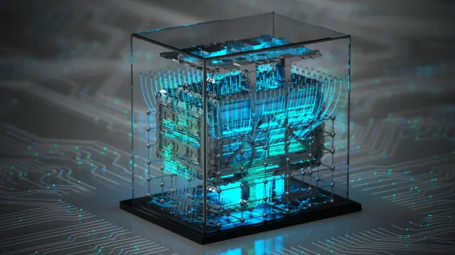

A Fundação dos Algoritmos e da Lógica (1985 - 1996)
A computação quântica nasceu como ciência quando cientistas perceberam que as leis quânticas criariam uma lógica de programação totalmente nova.
O início ocorreu em 1985, quando o físico David Deutsch publicou as bases da primeira Máquina de Turing Quântica, provando que superposição e emaranhamento
revolucionariam o processamento de dados.
O campo ganhou relevância global em 1994 com o Algoritmo de Shor, que demonstrou matemática e teoricamente a capacidade de quebrar os sistemas de criptografia que
protegem bancos e comunicações mundiais. Em 1996, Lov Grover criou um algoritmo para buscas ultrarrápidas em bancos de dados. Esses dois códigos provaram
a utilidade prática da tecnologia, atraindo os primeiros investimentos governamentais.

Transição de Teoria para Hardwares Reais (1996 - 2010)
Após a criação dos algoritmos de Shor e Grover, o desafio virou engenharia. Em 1998, cientistas do MIT, Oxford e Stanford executaram
o primeiro algoritmo quântico em um sistema primitivo de 2 qubits.
Em 2001, a IBM avançou ao faturar o número 15 usando um processador de 7 qubits. A década de 2000 focou em descobrir os melhores
materiais para criar qubits estáveis. Em 2007, a canadense D-Wave revelou o primeiro sistema comercial voltado para otimização, provando
que a tecnologia estava deixando os laboratórios rumo ao mercado empresarial.
A Corrida na Nuvem e a Era NISQ (2011 - Presente)
A partir de 2011, gigantes como Google, IBM e Intel injetaram bilhões no setor. O acesso mudou em 2016, quando a IBM conectou um computador
quântico à nuvem para uso público. Já em 2019, o Google anunciou a "Supremacia Quântica" com seu chip Sycamore de 53 qubits, realizando
em minutos uma tarefa que levaria milênios em supercomputadores comuns.
Atualmente, o setor vive a era NISQ (sistemas intermediários com ruído). Por isso, o foco atual do mercado mudou do aumento bruto de qubits
para a eficiência na correção de erros. Empresas como QuEra e IonQ lideram avanços para criar qubits lógicos limpos, preparando a computação
quântica para atuar junto com a Inteligência Artificial.